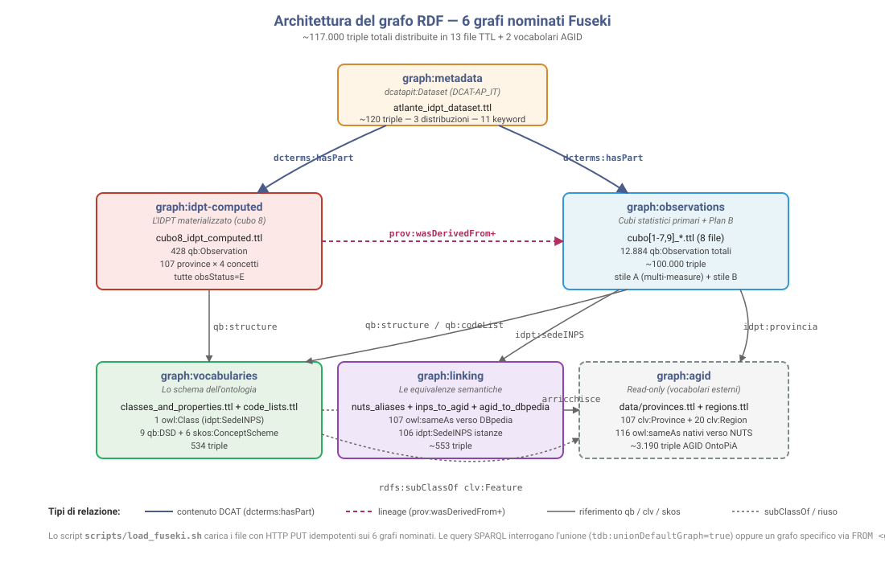

Che cos'è l'IDPT
L'Indice di Dipendenza Previdenziale Territoriale (IDPT) è un indice composito che misura, per ciascuna delle 107 province italiane, quanto il territorio è "dipendente" dal sistema pensionistico. È calcolato come media aritmetica di tre componenti normalizzate in [0,1]:
- D1 — Pressione demografica previdenziale: rapporto fra numero di pensioni vigenti e numero di occupati della provincia. Misura quanto la base produttiva di un territorio "sostiene" la sua base assistita.
- D2 — Peso economico delle pensioni: rapporto fra monte annuo delle pensioni e monte annuo dei redditi da lavoro dichiarati. Misura quanto pesa la spesa pensionistica sul reddito complessivo del territorio.
- D3 — Eredità storica delle riforme: quota di pensioni ancora liquidate in regime retributivo pre-Riforma Dini 1995 sul totale delle vigenti. Misura il "peso del passato" delle stratificazioni normative.
Il risultato sostantivo è un divario Nord/Sud netto di circa 20× fra gli estremi della classifica: Reggio di Calabria 0,675 in cima, Bolzano 0,034 in fondo. Il fine del progetto, oltre alla domanda di ricerca, è la pratica del Linked Open Data 5★: portare nove dataset pubblici italiani (CSV INPS, ISTAT, MEF + vocabolari controllati AGID) a un grafo RDF interoperabile con riuso massimo di vocabolari standard. Per il dettaglio metodologico completo, consulta il report interattivo.
Il grafo in numeri
Mappa IDPT — divario Nord/Sud
Indice composito normalizzato in [0,1]. Sud Italia rosso scuro (alta dipendenza), Nord Italia giallo (bassa dipendenza). Passa il mouse su una provincia per il dettaglio delle 3 componenti.
Apri mappa interattiva ↗ Confronta le 4 componenti affiancate ↗
Risultati: top & bottom IDPT 2026
Più dipendenti
| # | Provincia | IDPT |
|---|---|---|
| 1 | Reggio di Calabria | 0.675 |
| 2 | Taranto | 0.651 |
| 3 | Catanzaro | 0.627 |
| 4 | Oristano | 0.580 |
| 5 | Nuoro | 0.552 |
Meno dipendenti
| # | Provincia | IDPT |
|---|---|---|
| 107 | Bolzano/Bozen | 0.034 |
| 106 | Milano | 0.100 |
| 105 | Trento | 0.104 |
| 104 | Prato | 0.121 |
| 103 | Padova | 0.141 |
Le 3 componenti dell'IDPT
| Componente | Formula | Range grezzo |
|---|---|---|
| D1 Pressione demografica | pensionati / occupati | 0.59–1.48 |
| D2 Peso economico | monte pensioni / monte redditi da lavoro | 0.33–0.77 |
| D3 Eredità storica | % pensioni in regime retributivo | 0.42–1.37 |
Le 3 componenti vengono normalizzate min-max sui 107 valori provinciali e aggregate con media aritmetica. L'IDPT aggregato finale è in [0,1].
Architettura del grafo
Il grafo RDF (~120.000 triple, di cui ~117.000 prodotte dal progetto e ~3.200 del vocabolario AGID riusato) è organizzato in 6 grafi nominati Fuseki
che separano semanticamente schema, dati primari, indicatori derivati, equivalenze
e metadati. Lo schema sotto mostra i 6 grafi e le principali relazioni
(dcterms:hasPart, prov:wasDerivedFrom, qb:structure).

Scarica il grafo RDF + esplora l'ontologia
I file Turtle sono direttamente nella cartella output/ del repository.
L'ontologia formale del progetto è apribile in Protégé (file aggregato
ontology.ttl) oppure visualizzabile interattivamente come grafo navigabile
con il visualizzatore standard WebVOWL.
Esegui le 12 query SPARQL
Le 12 query di demo sono pre-eseguite sul grafo. Clicca un pulsante per vedere il codice SPARQL della query e i risultati restituiti dal grafo (snapshot 1.1.2026).
Codice SPARQL
Caratteristiche LOD
- 9 vocabolari standard riusati: qb, SKOS, CLV OntoPiA, sdmx-attribute, OWL-Time, DCAT-AP_IT, owl:sameAs, prov:wasDerivedFrom, foaf/vcard.
- 1 sola classe propria (
idpt:SedeINPS); tutto il resto è istanza di classi standard. - Linking esterno: 107
owl:sameAsverso DBpedia. - Pattern "osservazione derivata" uniforme in 4 punti (Sardegna retroattiva, importo annuo ricostruito, Plan B GDP, IDPT).
- DCAT-AP_IT per metadati conformi al profilo italiano AGID.
Documentazione
Il report completo è la trasposizione interattiva del progetto: sezioni navigabili, mappa embedded, snippet SPARQL e Turtle, lettura completa del lavoro svolto.